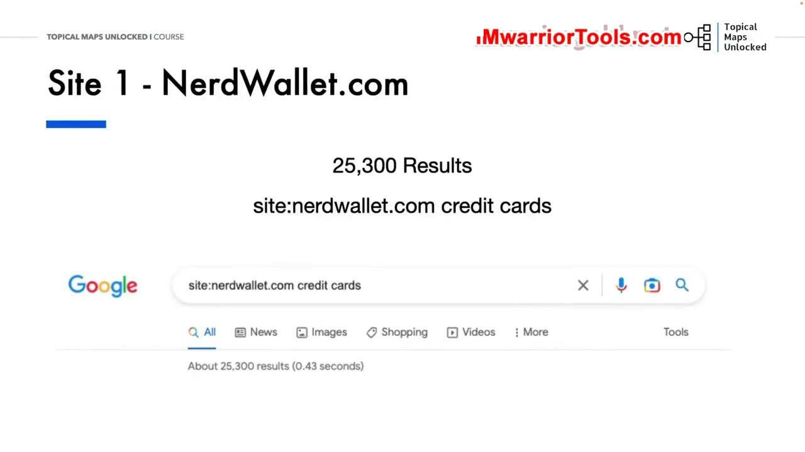
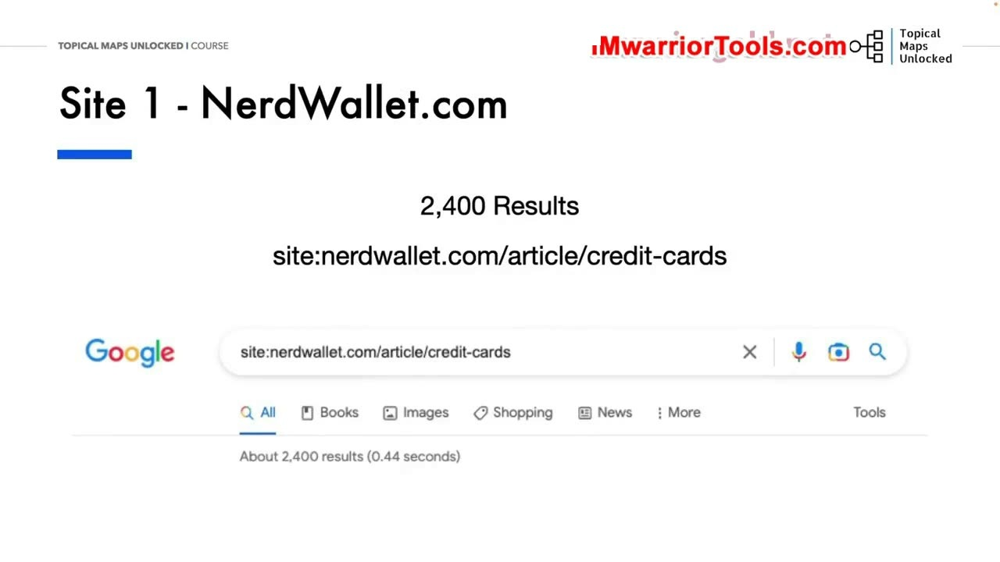
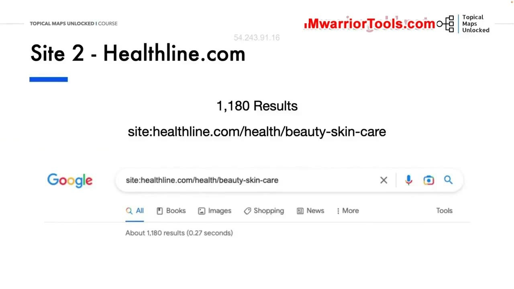
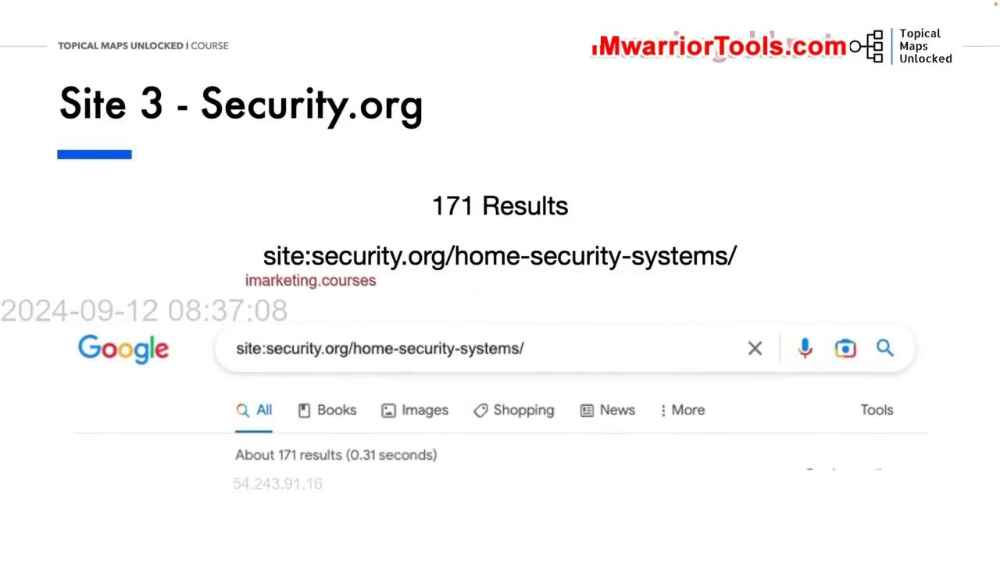

Examples of Sites With Good Topical Maps and Authority
1. Nghiên cứu thực tế: Phân tích các website có Topical Map và Authority xuất sắc
Trong bài học thực hành này, Yoyao đưa người học vào các ví dụ thực tế trên Internet để chứng minh cách các trang web lớn hàng đầu thế giới tổ chức bản đồ chủ đề và xây dựng thẩm quyền chuyên môn vững chắc như thế nào.
Phương pháp được ông sử dụng là dùng các toán tử tìm kiếm nâng cao của Google, đặc biệt là cú pháp tìm kiếm site:domain.com [keyword] hoặc site:domain.com/[subfolder] để bóc tách chính xác số lượng trang được Google lập chỉ mục trong từng phân nhánh chủ đề cụ thể.

2. Trang web 1 - NerdWallet.com: Thống trị ngành tài chính và thẻ tín dụng
Ví dụ đầu tiên là NerdWallet.com, một trong những đế chế tài chính cá nhân lớn nhất thế giới:
- Khi tìm kiếm
site:nerdwallet.com credit cards, Google trả về hơn 25.300 kết quả bao phủ mọi khía cạnh liên quan đến thẻ tín dụng. - Khi đi sâu vào thư mục bài viết hướng dẫn
site:nerdwallet.com/article/credit-cards, Google trả về khoảng 2.400 kết quả chuyên sâu. - Và khi thu hẹp vào thư mục so sánh sản phẩm tốt nhất
site:nerdwallet.com/best/credit-cards, số lượng trang được cô đọng lại thành 88 bài viết chất lượng cao nhắm vào các ý định tìm kiếm thương mại có giá trị sinh lời cao nhất.
Sự phân cấp thư mục này cho thấy NerdWallet đã xây dựng một mạng lưới Silo hoàn hảo, bao phủ từ các bài viết kiến thức rộng lớn cho đến các trang so sánh sản phẩm ngách cực kỳ sắc bén.

3. Trang web 2 - Healthline.com: Đế chế thẩm quyền trong ngành y tế và chăm sóc da
Ví dụ thứ hai là Healthline.com, biểu tượng số một về việc đáp ứng các tiêu chuẩn khắt khe của E-E-A-T và Topical Authority trong ngành y tế sức khỏe (YMYL):
- Tìm kiếm tổng thể
site:healthline.com skincaretrả về con số khổng lồ: hơn 68.700 kết quả liên quan đến chăm sóc da. - Khi kiểm tra thư mục chuyên biệt về sắc đẹp và làm đẹp
site:healthline.com/health/beauty-skin-care, Google ghi nhận chính xác 1.180 bài viết được tổ chức bài bản.
Một website đạt được hơn 1.000 bài viết chuyên sâu chỉ trong một nhánh con duy nhất về chăm sóc da thì không có lý do gì mà Google không công nhận họ là một chuyên gia đầu ngành có thẩm quyền tuyệt đối trong lĩnh vực đó.

4. Trang web 3 - Security.org: Chiến lược bao phủ ngách an ninh gia đình hoàn hảo
Ví dụ thứ ba là Security.org, một trường hợp điển hình về website affiliate đánh giá sản phẩm ngách chuyên sâu:
- Tìm kiếm
site:security.org home securitytrả về 1.140 kết quả chuyên môn. - Thư mục chuyên về hệ thống an ninh
site:security.org/home-security-systems/có đúng 171 bài viết đánh giá từng thương hiệu, so sánh tính năng và hướng dẫn cài đặt. - Thư mục chuyên về camera an ninh
site:security.org/security-cameras/bao gồm 269 bài viết bao quát toàn bộ các dòng camera trong nhà, ngoài trời và cảm biến chuyển động.
Yoyao kết luận: Bài học lớn nhất rút ra từ các website thành công này là họ không xuất bản dàn trải ngẫu hứng. Họ xây dựng từng Silo chuyên sâu, bao phủ từ hàng trăm đến hàng ngàn bài viết gắn kết chặt chẽ theo cấu trúc Topical Map. Đó chính là bí mật giúp họ đạt được thứ hạng thống trị bền vững trên Google trong suốt nhiều năm qua.

Nguồn và đối chiếu
- Topical Maps Unlocked 2.0 · 04-Examples of Sites With Good Topical Maps and Authority (Video bài học chính).
- Đối chiếu ngữ nghĩa với bản tiếng Anh: Bản Tiếng Anh/04-Tropical Maps Module/04-Examples of Sites With Good Topical Maps and Authority.mp4 (xác thực các ví dụ phân tích thực tế NerdWallet, Healthline và Security.org).